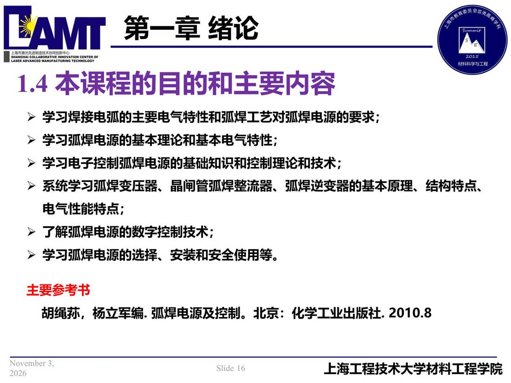

01 第1章 绪论/p016 1.4 本课程的目的和主要内容
p016 1.4 本课程的目的和主要内容
📄 原文：📄 弧焊电源 课件（PDF 第 16 页）（幻灯片 16/273；PDF 第 16 页）
1.4 本课程的目的和主要内容

讲义原文
- 学习焊接电弧的主要电气特性和弧焊工艺对弧焊电源的要求；
- 学习弧焊电源的基本理论和基本电气特性；
- 学习电子控制弧焊电源的基础知识和控制理论和技术；
- 系统学习弧焊变压器、晶闸管弧焊整流器、弧焊逆变器的基本原理、结构特点、电气性能特点；
- 了解弧焊电源的数字控制技术；
- 学习弧焊电源的选择、安装和安全使用等。 主要参考书胡绳荪，杨立军编. 弧焊电源及控制。北京：化学工业出版社. 2010.8
本页标红（老师强调）
- 主要参考书